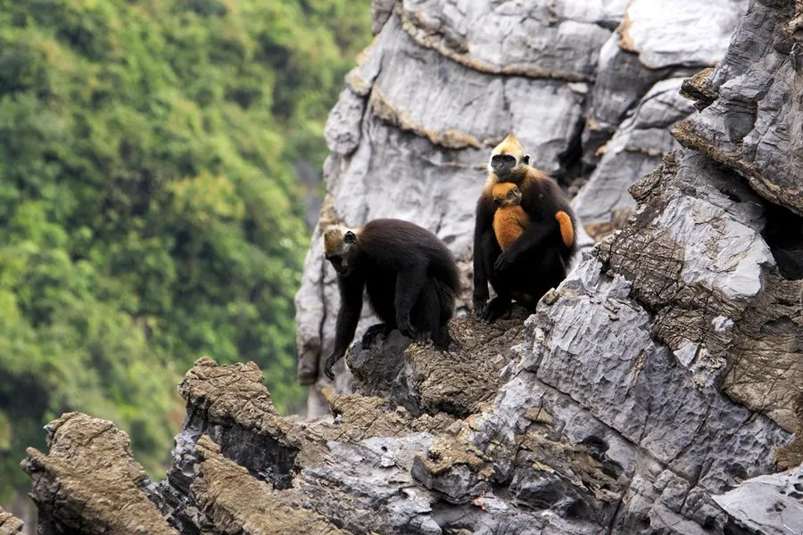

哺乳动物 · 动物界
白头叶猴 Trachypithecus poliocephalus

中国广西喀斯特石山特有的叶猴，头部和肩部覆白色毛、身体乌黑，全球仅存约千只，是最濒危的灵长类之一。
- 分类
- 门脊索动物门纲哺乳纲目灵长目科猴科属叶猴属
- 栖息环境
- 中国广西西南部的喀斯特石山与山地森林
- 地理分布
- 中国广西崇左市左江与明江之间的喀斯特石山区，为当地特有种
- 保护级别
- IUCN 极危（CR）；中国国家一级保护动物
物种志
白头叶猴体长 0.5–0.6 米，尾长 0.8–0.9 米，体重 8–10 kg。它的头部、颈部和肩部覆白色至浅灰色长毛，身体其余部分为黑色，因此得名；面部黑色，头顶有白色冠毛，四肢修长，适合在岩壁上活动。幼猴出生时全身橙黄色，逐渐变为黑白配色。
白头叶猴仅分布于中国广西西南部的左江与明江之间的喀斯特石山区，是分布范围最狭窄的灵长类之一。它以树叶、嫩芽和花为食，结成 5–10 只的群体，一雄多雌，白天在岩壁与树冠间活动，夜间栖息于岩洞或岩缝中。雌性妊娠期约 6–7 个月，每胎 1 仔。由于石山植被破坏、开垦和人为干扰，白头叶猴全球种群仅约 1000 只，被列为极危，中国将其列为国家一级保护动物；近年来保护区建设和社区保护使种群略有恢复。
形态与习性
- 食性树叶、嫩芽与花
- 体长0.5–0.6 m，尾长 0.8–0.9 m
- 体重8–10 kg
- 寿命约 20 年
- 繁殖妊娠期约 6–7 个月，每胎 1 仔
- 社会结构5–10 只的群体，一雄多雌
- 种群数量全球约 1000 只
趣味知识
- 白头叶猴只分布在中国广西左江与明江之间的喀斯特石山。
- 它头部和肩部覆白色毛，身体其余部分乌黑，黑白分明。
- 白头叶猴全球仅存约 1000 只，是最濒危的灵长类之一。
- 幼猴出生时全身橙黄色，长大后才变成黑白配色。